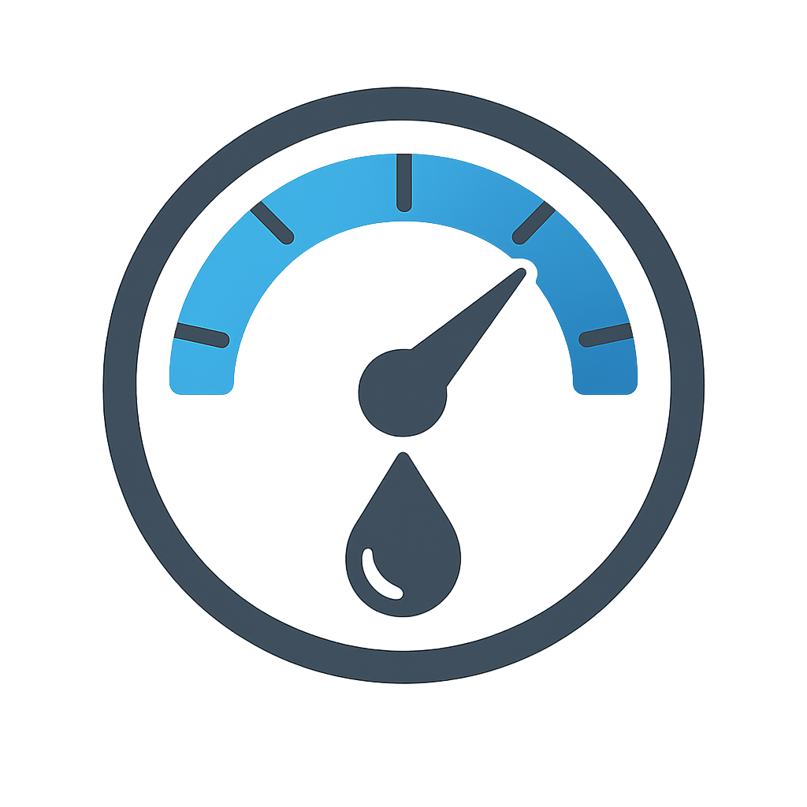

@if(lines$ | async ) {
@if(lecMes$ | async ) {
@if(lec$ | async ) {
<qx-preference />
<div class="content-page">
    <qx-title-header title="Inicio" />
    <div class="single-content flex-column">
        <div class="head flex-row">
            <div class="lines-gauge flex-column">
                <qx-demo-landing />
                @for(line of getLecturasByMedidor(); track line.Id) {
                @if(line.Medidor.lecturas.length !== 0) {
                <div class="target-line-gauge">
                    <qx-title-header title="{{line.Codigo}} - {{ line.Area.Nombre }} - {{ line.Medidor.Codigo }}"
                        [subtitle]="true" />
                    <div class="info flex-between">
                        
                        <qx-badge text="Habilitado" styleClass="rounded success" />
                        <!-- <qx-button type="label-icon" styleClass="square primary-ghost" icon="fas fa-ellipsis-vertical" label="Ver detalle"/> -->
                    </div>
                    <canvas baseChart [data]="chartDataByLitros(line.Medidor.lecturas, line.Medidor.fechas )"
                        [options]="chartOptions" [type]="chartType">
                    </canvas>
                </div>
                }
                }
            </div>
            <div class="chart-card-xl flex-column">
                <qx-title-header title="Consumo General" />
                <div class="from-to flex-row">
                    <div class="from-to flex-row">
                        <div class="input-date native-input">
                            <label for="fromDate">Desde:</label>
                            <input type="date" id="fromDate" [value]="fromString" (change)="onFromChange($event)" />
                        </div>
                        <div class="input-date native-input">
                            <label for="toDate">Hasta:</label>
                            <input type="date" id="toDate" [value]="toString" (change)="onToChange($event)" />
                        </div>

                        <qx-button type="label-icon" styleClass="square primary-ghost" icon="fas fa-calendar"
                            label="Aplicar" (onClick)="consultarPeriodo()" />
                    </div>
                </div>
                <canvas baseChart [data]="getChartDataPorMes()" [options]="chartOptions" [type]="chartType">
                </canvas>

            </div>
        </div>
    </div>
</div>
}
}
}